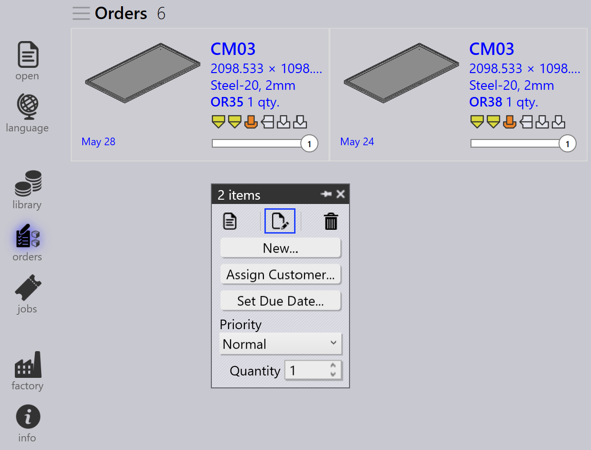

Aufträge
Ein Auftrag definiert, welche Teile in welcher Menge und bis wann gefertigt werden müssen. Er steuert die Produktionsplanung und -ausführung in TruSmartCAM. Aufträge können mit verschiedenen Methoden erstellt oder importiert werden und können für die Produktionsplanung in Jobs umgewandelt werden.
Auftragspanel

|
|


Aufträge bearbeiten
Wählen Sie einen oder mehrere Aufträge aus und klicken Sie mit der rechten Maustaste, um allgemeine Auftragsdetails wie Menge, Fälligkeitsdatum, Priorität und Kundeninformationen zu ändern.
Wenn mehrere ausgewählte Aufträge unterschiedliche Werte erfordern, verwenden Sie die Option Check-out for Editing, um jeden Auftrag je nach Anforderung einzeln zu bearbeiten.


Alle Änderungen an den Aufträgen werden sofort auf die Datenbank angewendet. Verwenden Sie den Befehl Löschen, um Aufträge aus der Auftragsbibliothek zu entfernen.
| Der Befehl Löschen entfernt nur die Aufträge. Teile, die mit den jeweiligen Aufträgen verknüpft sind, werden nicht aus der Teilebibliothek gelöscht. |
Aufträge planen
Wählen Sie einen oder mehrere Aufträge aus, klicken Sie mit der rechten Maustaste und klicken Sie auf Neu… → Job, um die ausgewählten Aufträge in Jobs umzuwandeln. Verwenden Sie die Sortier- und Filteroptionen, um relevante Aufträge vor der Job-Erstellung zu gruppieren.

Sobald die Aufträge in einen Job umgewandelt wurden:
-
Der Job wird auf die Seite Jobs verschoben
-
Die Aufträge werden aus der Auftragsliste entfernt
-
Der Standard-Job-Planungsworkflow kann dann für die Produktionsplanung und das Nesting verwendet werden

Weitere Informationen zum Job-Planungsworkflow finden Sie unter Auto Plan
Zusätzliche Informationen
-
Wenn ein Job mit Aufträgen gelöscht wird, werden die zugehörigen Aufträge automatisch zurück auf die Seite "Aufträge bereit" verschoben, es sei denn, der Job oder das Teil ist als Abgeschlossen markiert.

-
Aufträge können je nach Produktionsanforderungen über das Fenster Job wird bearbeitet zu einem bestehenden Job hinzugefügt oder aus ihm entfernt werden.